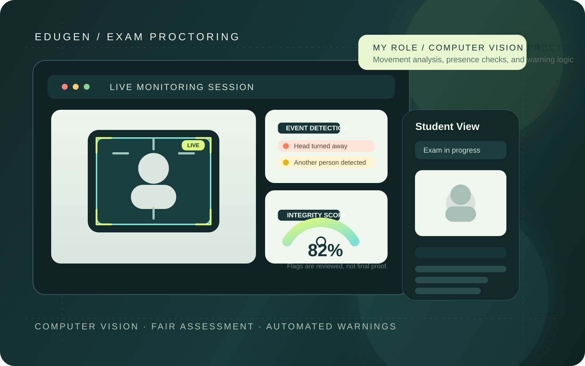

← ALL PROJECTSEduGen
DEPI GRADUATION PROJECT / 2026
EduGen
A fairer exam experience.
An AI-powered platform for instructors and students, with exam-generation capabilities and camera-based integrity monitoring.
01 / THE IDEA
The idea behind
the build.
EduGen is a team-built education platform for creating, delivering and grading exams. The wider project includes RAG-assisted exam generation and APIs supporting student submissions and instructors.
Online assessments introduce challenges around exam supervision. A camera-based monitoring component can flag potentially suspicious patterns for review, without assuming that a flag is proof of cheating.

CUSTOM VISUAL BASED ON THE PROJECT FOCUS02 / MY ROLE
The part I
worked on.
- Built part of the computer vision-based exam-proctoring workflow.
- Worked on detecting suspicious side-to-side movements, additional people appearing in the frame and students leaving the camera view.
- Implemented warning generation when monitored behavior is flagged.
03 / TECHNOLOGY
The building
blocks.
A snapshot of tools used in the project. Some technologies describe the wider team platform, not necessarily my individual implementation.
Python
Computer Vision
Camera Monitoring
Warning Logic
FastAPI (platform stack)
RAG (platform stack)